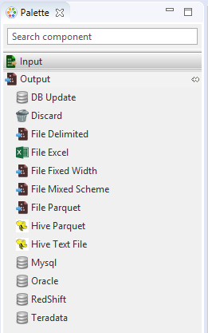
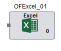

Output File Excel
Output File Excel as the name suggests writes data to Microsoft Excel. It is present under the Output category in the component palette.
Output File Excel component will enable writing data in the data flow pipeline to a Microsoft Excel spreadsheet with extension as .xls or .xlsx . Multiple worksheets can be created.
The Output File Excel component can be easily distinguished in the component palette.

An enlarged version of the same is depicted when dragged on the canvas.

For further reference click on the links below: